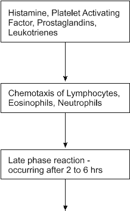
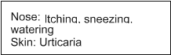
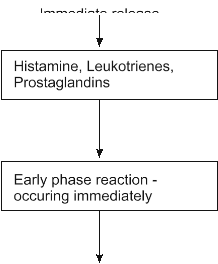
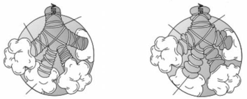
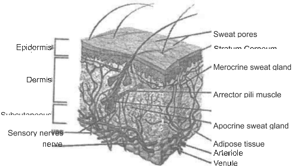
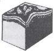

ALLERGY
ALLERGY AN OVERVIEW
An allergy is sensitivity to a substance which does not normally cause people any discomfort or harm. Allergy means 'changed activity' and describes changes that occur after coming in contact with a foreign substance. Thus, when the body overreacts to otherwise harmless substances, it is called as allergy.
'Allergy - is defined as when an antigen, which is not harmful in itself, causes an immune response and reaction which gives rise to symptoms and disease in a few predisposed individuals only'
MECHANISM OF ALLERGIC REACTIONS
● Although, the term 'allergy' by definition originally covered all types of hypersensitivity reactions as well as the induction of immunity in an individual, nowadays, the term is more commonly applied to IgE - mediated allergic reactions.
● The term “atopy” is often used to describe IgE-mediated diseases.
● Persons with atopy have a hereditary predisposition to produce IgE antibodies against common environmental allergens.
● All of inhale environmental aeroallergens like pollens, house-dust, mites, etc.
● After inhalation, antibodies are produced with the help of T helper cells.
● The T helper cells are of two types: Type 1 (Th1) and Type 2 (Th2).
● The types of antibodies produced depend on whether the person is allergic to that particular substance.
● If a person is allergic, then Ig E antibodies are produced - otherwise Ig G antibodies are produced.
After IgE antibodies specific for certain allergen are synthesized and secreted, they bind to mast cells and basophils.
● When allergen is inhaled into the nose, the allergen cross-links these allergen- specific cell-bound IgE antibodies on the mast cell surface, whereupon rapid degranulation and mediator release occur (mediators are chemicals responsible to produce signs and symptoms of allergy)
● The most important mediator is histamine, which reproduces all of the symptoms of acute allergic rhinitis. Histamine causes vasodilation - that leads to nasal congestion, mucus secretion, and increased vascular permeability, which in turn leads to tissue edema and sneezing through stimulation of sensory nerve fibers.
● The cross-linking of IgE antibody on mast cells also initiates the release of arachidonic acid from cell membrane. Mast cells then metabolize arachidonic acid - either via the cyclo-oxygenase pathway to form prostaglandins and thromboxane mediators or via the lipoxygenase pathway to form leukotrienes. Prostaglandin D2, the Leukotrienes LTC4, LTD4, LTE4, and platelet activating factors are formed.
● Once allergic reactions begin, mast cells amplify them by releasing not only agents mentioned earlier but also cytokines (another type of mediators). These cytokines further promote IgE production, and eosinophil chemotaxis. When eosinophil
movement is promoted, eosinophils secret mediators, which favor TH
cell proliferation.
Eosinophils also release oxygen radicals and mediators, including eosinophil major basic protein, which are toxic to the nasal epithelium and which damages the nasal epithelium.
● The mediators released during the pathogenesis are responsible for the clinical signs and symptoms. The signs and symptoms of allergic diseases occur in two phases - Early phase and Late phase.
● The early response-starts within minutes, with degranulation of mast cells and is caused by histamines.
● The late response-develops after 4-6 hrs. During the late response there is
accumulation and activation of TH
cells, eosinophils, and other cells, which all
by their release of cytokines mediators and cytotoxic proteins contribute to an inflammatory reaction.
Diagramatic representation of events occurring during allergic reaction
The mediator release takes place as is shown below:
CHEMICAL MEDIATORS IN ALLERGY
MAST CELLS
These cells are the primary initiating cells of IgE-mediated allergic reactions, as they have high-affinity receptors for IgE and synthesize, and release histamine and other chemical mediators. They are very important for eliciting symptoms in allergic rhinitis and urticaria.
Cellular characteristics
● The mast cell is a tissue cell, predominant in skin, airway and gastro-intestinal tract.
● It is characterized by granules, which contain histamine, leukotrienes and prostaglandins.
Chemical mediators, released from mast cells and basophils, are either stored in the granules (histamine) or newly synthesized from lipids in the cells membrane.
Histamine
● Histamine stimulates nerve endings, contracts smooth muscles and increases vascular permeability.
● In the skin, it induces the typical wheal-and-flare reaction.
● In the nose, it causes itching, hypersecretion and blockage.
● Bronchial histamine inhalation results in broncho-constriction.
● High plasma levels can result in anaphylaxis*. All these effects are mediated through
H1 histamine receptors.

Lipid mediators
Lipid mediators, or membrane-derived mediators, are the leukotrienes (LTB4, LTC4, LTD4 and LTE4) PGD2, thromboxane and PAF.
Prostaglandins and Leukotirenes

LTB4 - is chemotactic for polymorphonuclear leukocytes. LTC4 & LTD4 - will potentiate the immune reaction.
LTs play an important role in asthma.
ALLERGIC RHINITIS
What happens in Allergic Rhinitis
The nose is a highly sensitive organ. Nasal mucosa, mucus-secreting membranes that line the nasal cavity, react to various environmental factors, which may include allergens (such as pollen and mold) and irritants (such as cigarette smoke and formaldehyde). When the mucosa encounters substances that interfere with proper functioning, the turbinates swell and mucus production increases in an effort to carry away offending irritants. The result is sneezing, nasal stuffiness, itching, a runny nose, and other signs and symptoms.
Characteristics of Allergic Rhinitis
● Allergic rhinitis generally presents in atopic individuals, i.e., in persons with a family history of a similar or related symptom complex and a personal history of collateral allergy expressed as eczematous dermatitis, urticaria, and/or asthma.
● Allergic rhinitis is also associated with other allergic conditions like allergic conjunctivitis, atopic dermatitis, and allergic asthma.
● Symptoms generally appear before the fourth decade of life and tend to diminish gradually with aging, although complete spontaneous remissions are uncommon.
● The nasal mucosa swells, becomes red. Sometimes the conjunctiva becomes red.
The pharynx may also appear congested.
● Episodic rhinorrhea (watering of the nose), sneezing, and obstruction of the nasal passages with lachrymation and pruritus (itching) of the conjunctiva, nasal mucosa, and oropharynx (itching in the throat) are the hallmarks of allergic rhinitis.
● Chronic allergic rhinitis may be associated with sinusitis, secretory otitis media.
Types of Allergic rhinitis
● Seasonal allergic rhinitis - When allergic rhinitis is triggered by outdoor allergens
- such as pollens, tree, grass, weeds, feather it is called as seasonal.
● Perennial (last all year round) - When allergic rhinitis is triggered by indoor allergens, such as dust mites, animal dander or molds is called as perennial.
Early and late phase reaction
|
Condition
|
Parameter
|
Early phase symptoms
|
Late phase symptoms
|
|
Allergic
|
Onset
|
Occurs within minutes
|
Occurs after 2-6 hours
|
|
|
Symptoms
|
Itching, sneezing, rhinorrhoea
|
Nasal congestion,
increased mucous secretion
|
Treatment
Management of allergic rhinitis includes avoidance of causative allergens. It may not be practical or possible every time. Hence symptomatic treatment is the mainstay in the management of allergic rhinitis. In the management of allergic conditions many types of drugs are used. They are:
● Corticosteroids: These drugs inhibit the enzyme phospholipase and ultimately prevent the release of mediators. They are highly effective in the management of all allergic conditions including allergic rhinitis. However if they are used indiscriminately they can cause serious side effects. If used for longer periods they have to be tapered off and not abruptly stopped. They can even be used topically.
● Antihistamines: There are many antihistamines available. Levocetirizine is distinctly superior to all of them as can be seen from subsequent discussion.
● Combinations of antihistamines and decongestants: (like pseudoephedrine or phenylpropanolamine or phenylephrine): are also used in the management of allergic rhinitis. The nasal decongestants are mainly used to relieve the nasal congestion associated with common cold or allergic rhinitis. These decongestants can give rebound congestion as a side effect. Importantly Pseudoephedrine can sometimes cause tachycardia, restlessness etc. Levocetirizine provides benefits from all signs and symptoms of allergic rhinitis and would also be used in other allergic conditions.
● Topical nasal drops: These are combinations of antihistamines / decongestants.
Besides inconvenience of use, these preparations are associated with side effects of rebound congestion, local irritation etc. The corticosteroids could also be used as nasal sprays. They may have to be used two times a day. However prolonged and indiscriminate use can cause serious side effects. Levocetirizine is an oral preparation and provides excellent relief from signs and symptoms of allergic rhinitis.
● Mast cell stabilizers: These drugs stabilize the mast cells and prevent the release of mediators secondary to allergen exposure. The effects are not apparent immediately. Moreover they have to be taken for a longer period of time. Ketotifen is given orally but sodium cromoglycate is given by intranasal route.
ASTHMA AND ALLERGY
Asthma is a chronic inflammatory disorder of the airways characterized by airflow obstruction and airway hyperreponsiveness to multiple stimuli. This widespread but variable airflow obstruction is caused by bronchospasm, edema of the airway mucosa, increased mucus production with plugging, and airway remodeling.
Asthma
Asthma is a predisposition to chronic inflammation of the lungs in which the airways (bronchi) are reversibly narrowed. Asthma is an airway disease that can be classified physiologically as a variable and partially reversible obstruction to air flow and pathologically with overdeveloped mucus glands, airway thickening due to scarring and inflammation, and bronchoconstriction, the narrowing of the airways in the lungs due to the tightening of surrounding smooth muscle. Bronchial inflammation also causes narrowing due to edema and swelling caused by an immune response to allergens.
Asthma affects 7% of the population worldwide. During asthma attacks (exacerbations of asthma), the smooth muscle cells in the bronchi constrict, and the airways become inflamed and swollen. Breathing becomes difficult.
Before an asthma episode
After an asthma episode
Airway
Muscule
Airways fill with muscus
Muscles around the airway combact
Inflamed airways and bronchoconstriction in asthma. Airways narrowed as a result of the inflammatory response cause wheezing.
During an asthma episode, inflamed airways react to environmental triggers such as smoke, dust, or pollen. The airways constrict and produce excess mucus, making it difficult to breathe. In essence, asthma is the result of an immune response in the bronchial airways.
Attacks can be prevented by avoiding triggering factors and by drug treatment.
Drugs are used for acute attacks, commonly inhaled beta-2 agonists. In more serious cases, drugs are used for long-term prevention, starting with inhaled corticosteroids, and then long-acting ß2-agonists if necessary. Leukotriene antagonists are less effective than corticosteroids but have no side effects. Therefore leukotriene antagonists,like montelukast, are used as maintenance therapy.
Co-relation between Allergic Rhinitis and Asthma
Allergic rhinitis has been recognized as a risk factor for asthma; between 20% and
38% of patients who have allergic rhinitis have coexisting asthma
Asthma and allergic rhinitis (AR) are highly prevalent diseases that frequently occur as comorbid conditions. Clinical symptoms of asthma and AR may represent local manifestations of a single inflammatory disorder as both diseases share a common pathology and are characterized by similar inflammatory cells.
ALLERGIC DISEASES OF THE SKIN
URTICARIA
Urticaria - is sudden eruption of transitory, itchy wheals of various size and shape and is marked by wheal & flare reaction.
Wheals - are flat, pale red elevations, surrounded by erythema, They develop within minutes and disappear within 24 hours without persistent skin changes (vary from 0.2 to 10 cm)
Flare - is a diffuse area of redness around the wheal.
Characteristics of Urticaria:
● Urticaria is characterized by elevated, erythematous pruritic wheals.
● Acute episodes of urticaria are arbitrarily defined as those lasting less than 6 weeks.
More prolonged episodes are defined as chronic.
● Urticaria could be caused by following agents:
Food Allergy: Eggs, shell fish, nuts, milk, chocolate, citrus fruits, tomatoes, fish, food dyes, etc
Drug Allergy: Penicillins, NSAIDs, Diuretics, Sulfonamides, Muscle relaxants, etc.
Insect Stings or bites: Bee, wasp, etc
● Although urticaria can be caused by any of the factor mentioned above, it is said it is difficult to identify the cause of urticaria in about 70% of cases - These cases are called Idiopathic urticaria. Most of these cases are chronic, hence the term chronic idiopathic urticaria. Needless to say chronic idiopathic urticaria is the most common form of urticaria.
● Degranulation of cutaneous mast cells is thought to be the most frequent cause of disease. Mast cells are found in large quantity within the subcutaneous tissues and dermis. They are present in large quantity surrounding the blood vessels.
● When they are activated by any of a number of stimuli, these cells release mediators like histamine that increase the permeability of the capillaries and also synthesize various mediators.
Commonly encountered allergen
|
Site
|
Allergen
|
|
Skin
|
Food allergens like Eggs, shell fish, nuts, milk, chocolate, citrus fruits, tomatoes, fish and food dyes.
|
Early and late phase reaction
|
Condition
|
Parameter
|
Early phase symptoms
|
Late phase symptoms
|
|
Allergic
|
Onset
|
Occurs within minutes
|
Occurs after 2-6 hours
|
|
|
Symptoms
|
Urticaria
|
Erythema, pruritus
|
Atopic Dermatitis
● Atopy is a genetic predisposition to develop an immediate hypersensitivity against substances of day-to-day exposure
● Atopic dermatitis is a pruritic, superficial inflammation of the skin.
● It is frequently associated with a history of allergic disorder
● The affected area becomes red, itching is severe
● The areas generally affected are arms, legs, face etc.
● Oral antihistamine are used to provide symptomatic relief.
Contact Dermatitis
● Contact dermatitis is of two types: Irritant and allergic.
● Irritant contact dermatitis is produced by substances like acids, alkalis, solvents etc.
● Allergic contact dermatitis is due to allergies to metals like nickel, cosmetics, even sometimes to topical medications.
● Symptoms are itching, redness in the area of contact.
● Besides avoidance of allergens antihistamines are used to provide symptomatic relief.
Treatment of Allergic Disorders:
Word to HTML trial - please
Go PRO to get whole HTML.